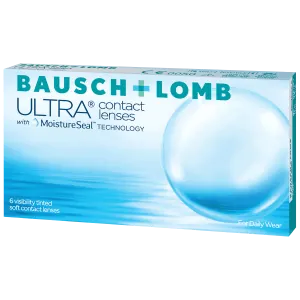
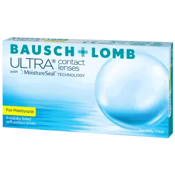
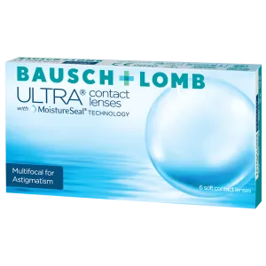
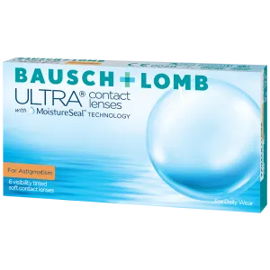
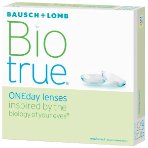
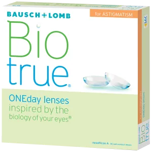
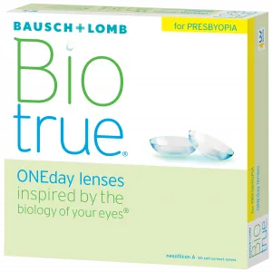
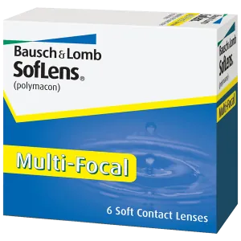
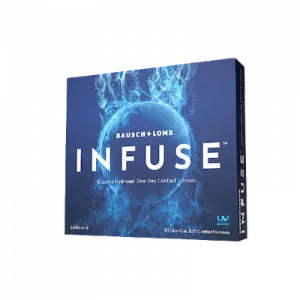

OUR Bausch + Lomb PRODUCTS

Bausch + Lomb ULTRA
MoistureSeal technology helps maintain 95% of lens moisture.
Innovative Lens Material
Designed to meet the demands of digital device users
- Nearly 60% of adults spend 5 or more hours on digital devices each day.
- 73% of individuals in their 20s report symptoms of digital eye strain.3
- 9 OUT OF 10 PATIENTS AGREE that Bausch + Lomb ULTRA® Contact Lenses help relieve their eyes from feeling dry and tired after a long day of looking at digital devices.
Up to 7 days of continuous lens wear with exceptional comfort.
Bausch + Lomb ULTRA® contact lenses are indicated for daily wear or extended wear of up to seven days. As with any contact lens, problems can result in serious injury to the eye, including loss of vision, and clinical studies have shown that the risk of serious adverse reactions is increased when lenses are worn overnight. It is essential that patients follow the eye care practitioner’s direction and all labeling instructions for proper use of lenses and lens care products. Consult the package insert for complete information.
Read More+

Bausch + Lomb ULTRA for Presbyopia
Presbyopic Contact Lenses
Fit For Success
Bausch + Lomb ULTRA® for Presbyopia contact lenses provide an easy, predictable fit with outstanding vision.
80% of patients were successfully fit in one visit.*
*First fit success for Bausch + Lomb ULTRA® for Presbyopia achieved when the ECP followed the fitting guide for the 3-Zone Progressive™ Design of the PureVision®2 for Presbyopia lens. Thirty-nine ECPs (from 10 countries) refitted 441 existing soft contact lens–wearing presbyopes into PureVision®2 for Presbyopia lenses. Patients returned for follow-up visits after 1-2 weeks. ECP assessment of lens performance including ease of fit and patient satisfaction with lenses in real-world conditions were measured using a 6-point agreement survey.
Read More+

Bausch + Lomb ULTRA Multifocal for Astigmatism
Bausch + Lomb ULTRA® Multifocal for Astigmatism is the first and only lens of its kind available as a standard offering.
This innovative lens combines the seamless transitions presbyopic patients want with the lens stability their astigmatism needs.
REACHING NEW LIMITS
Bausch + Lomb ULTRA® Multifocal for Astigmatism combines 3-Zone Progressive™ Design and OpticAlign® design for consistent power and minimized lens rotation.
3-Zone Progressive® Design for seamless transitions
OpticAlign® Design for reliable stability
Bausch + Lomb ULTRA® contact lenses are indicated for daily wear or extended wear of up to seven days. As with any contact lens, problems can result in serious injury to the eye, including loss of vision, and clinical studies have shown that the risk of serious adverse reactions is increased when lenses are worn overnight. It is essential that patients follow the eye care practitioner’s direction and all labeling instructions for proper use of lenses and lens care products. Consult the package insert for complete information.
Read More+

Bausch + Lomb ULTRA for Astigmatism
Deliver all-day comfort and consistently clear vision.
Patients wearing Bausch + Lomb ULTRA® for Astigmatism agree:
- 93% of patients agree this lens helps reduce halos and glare, even in low light.
- 91 % feels comfortable throughout the day
- 96 % provides comfortable vision, even when spending hours on digital devices
- 95 % delivers clear vision when driving at night
Available in -2.75D Cylinder
Bausch + Lomb ULTRA® contact lenses are indicated for daily wear or extended wear of up to seven days. As with any contact lens, problems can result in serious injury to the eye, including loss of vision, and clinical studies have shown that the risk of serious adverse reactions is increased when lenses are worn overnight. It is essential that patients follow the eye care practitioner’s direction and all labeling instructions for proper use of lenses and lens care products. Consult the package insert for complete information.
Read More+

Biotrue ONEday
Biotrue ONEday has more moisture than any other contact lens
And, maintains nearly 100% of its moisture for a full 16 hours2
Water-loving polymer
- PVP is the most abundant, hydrophilic component of the lens
- Allows for a lens that is 78% water content – same as the cornea
Patented dehydration barrier
- Poloxamer 407 drives to the lens surface to lock in moisture throughout the day
- Mimics the tear film to provide a smooth optical surface
WARNING: UV-absorbing contact lenses are NOT substitutes for protective UV-absorbing eyewear, such as UV-absorbing goggles or sunglasses, because they do not completely cover the eye and surrounding area. The effectiveness of wearing UV-absorbing contact lenses in preventing or reducing the incidence of ocular disorders associated with exposure to UV light has not been established at this time. You should continue to use UV-absorbing eyewear as directed. NOTE: Long-term exposure to UV radiation is one of the risk factors associated with cataracts. Exposure is based on a number of factors such as environmental conditions (altitude, geography, cloud cover) and personal factors (extent and nature of outdoor activities). UV-blocking contact lenses help provide protection against harmful UV radiation. However, clinical studies have not been done to demonstrate that wearing UV-blocking contact lenses reduces the risk of developing cataracts or other eye disorders.
Read More+

Biotrue ONEday for Astigmatism
TAKE A CLOSER LOOK I Biotrue ONEday for Astigmatism
94% of patients experience comfortable vision throughout the day
Peri-Ballast Design
- Spherical aberration control reduces halos and glare
- Thin, tapered edge design limits lid interaction
- Designed to work with natural blink patterns
WARNING: UV-absorbing contact lenses are NOT substitutes for protective UV-absorbing eyewear, such as UV-absorbing goggles or sunglasses, because they do not completely cover the eye and surrounding area. The effectiveness of wearing UV-absorbing contact lenses in preventing or reducing the incidence of ocular disorders associated with exposure to UV light has not been established at this time. You should continue to use UV-absorbing eyewear as directed. NOTE: Long-term exposure to UV radiation is one of the risk factors associated with cataracts. Exposure is based on a number of factors such as environmental conditions (altitude, geography, cloud cover) and personal factors (extent and nature of outdoor activities). UV-blocking contact lenses help provide protection against harmful UV radiation. However, clinical studies have not been done to demonstrate that wearing UV-blocking contact lenses reduces the risk of developing cataracts or other eye disorders.
Read More+

Biotrue ONEday for Presbyopia
If you find yourself holding books, menus and phone screens farther and farther away in order to focus properly, or if close work, like reading or handwriting, gives you headaches or eyestrain, you may be showing early signs of presbyopia.
Biotrue ONEday for Presbyopia daily disposable multifocal lens has a 3-Zone Progressive Design to help you see clearly and comfortably with your contacts, up close, far away, and in between. Biotrue ONEday for Presbyopia is made of a unique material that works like the eye to form a dehydration barrier providing comfort all day long.
Bausch + Lomb 3-Zone Progressive Design
You are constantly changing where you are looking, whether reading, working on a computer, or driving, it is important that your multifocal lenses keep up. Biotrue ONEday for Presbyopia features 3-Zone Progressive Design for clear vision up close, far away, and in between.
- NEAR - Adds power across the center portion of the lens
- INTERMEDIATE - Consistent zone where power gradually transitions to accurate distance power
- DISTANCE - Optimized for a natural visual experience
Key Features & Benefits
- Mimics the lipid layer of the tear film
- Matches the water content of the cornea
- Allows for the oxygen a healthy eye needs
- Maintains 98% of its moisture for up to 16 hours
- 33-Zone Progressive Design gives you clear vision up close, far away, and in between
- UVA/UVB protection to help protect your eyes along with sunglasses*
*WARNING: UV-absorbing contact lenses are NOT substitutes for protective UV-absorbing eyewear, such as UV-absorbing goggles or sunglasses, because they do not completely cover the eye and surrounding area. The effectiveness of wearing UV-absorbing contact lenses in preventing or reducing the incidence of ocular disorders associated with exposure to UV light has not been established at this time. You should continue to use UV-absorbing eyewear as directed.
Read More+

SofLens Multi-Focal
SofLens Multi-Focal (polymacon) visibility tinted contact lens is a soft hydrophilic contact lens that is a front surface asphere consisting of multiple aspheric zones with a spherical base curve.
The most plus power is in the center of the lens, progressing to more minus in the periphery. The lens material, polymacon, is 2-hydroxyethyl methacrylate, and is 38.6% water by weight when immersed in a sterile saline solution.
SofLens Multi-Focal contact lens may be prescribed for frequent/planned replacement or disposable wear.
Key Features & Benefits
- Unique Natra-Sight Optics designed to provide broad transition for near, intermediate and far vision
- Time-tested, deposit resistant material for excellent comfort
- Easy handling and adaptation
- Visibility tint
- Alternative to spectacles
Read More+

INFUSE™
The only silicone hydrogel daily disposable with a next-generation material infused with ProBalance Technology™ to help maintain ocular surface homeostasis1
NEXT-GENERATION MATERIAL
Balances exceptional moisture, modulus, and breathability to help minimize the impact on the ocular surface and provide excellent comfort:
- Most Moisture: 55%1†
- Maintains 96% of its moisture for a full 16 hours1
- Lowest Modulus: 0.5 MPa1†
- Helps reduce the impact on the ocular surface and provide a comfortable lens wearing experience
- High Oxygen: 134 Dk/t‡
- Helps maintain ocular surface homeostasis and keep the open eye healthy and white
†Versus leading silicone hydrogel daily disposables, DAILIES TOTAL1 and ACUVUE OASYS 1-DAY, based on dollar share of segment.
‡Oxygen transmissibility @ -3.00D.
BREAKTHROUGH PROBALANCE TECHNOLOGY™
A proprietary combination of ingredients inspired by the Tear Film and Ocular Surface Society’s Dews II report, plus moisturizers for contact lens comfort and ocular health.
§WARNING: UV-absorbing contact lenses are NOT substitutes for protective UV-absorbing eyewear, such as UV-absorbing goggles or sunglasses, because they do not completely cover the eye and surrounding area. The effectiveness of wearing UV-absorbing contact lenses in preventing or reducing the incidence of ocular disorders associated with exposure to UV light has not been established at this time. You should continue to use UV-absorbing eyewear as directed. NOTE: Long-term exposure to UV radiation is one of the risk factors associated with cataracts. Exposure is based on a number of factors such as environmental conditions (altitude, geography, cloud cover) and personal factors (extent and nature of outdoor activities). UV-blocking contact lenses help provide protection against harmful UV radiation. However, clinical studies have not been done to demonstrate that wearing UV-blocking contact lenses reduces the risk of developing cataracts or other eye disorders.
Read More+
- Most Moisture: 55%1†